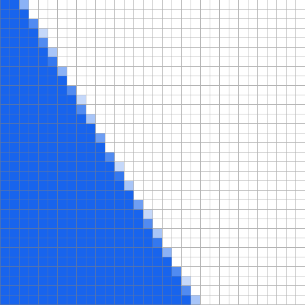
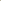
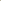

CS184/284A Spring 2025 Homework 1 Write-Up
Link to webpage:
Link to GitHub repository: cs184.eecs.berkeley.edu/sp25
Overview
In this homework, we implemented all the basic functionalities of a renderer, such as rasterization, pixel shader, texture rendering, and various anti-aliasing techniques. A really good technique that I learned in this is to always have modular code so you can reuse methods later, and another principle is that always test the performance instead of using intuition to see which implementation is better.Task 1: Drawing Single-Color Triangles
In this task, we implement the most basic rendering function: rasterizing and a triangle, in which we are given three points \((x_0,y_0),(x_1,y_1),(x_2,y_2)\) in screen coordinates, and we need to fill in all the pixels on screen/buffer that are within the triangle defined by these three points.To begin, the naive method is to iterate through all potential pixels and see if each one lies in the triangle, but we can do better than this. Instead, we consider a special property of the triangle: its convexity. What this means is that, if two points are within the triangle, then the entire line connecting the two points is within the triangle.
Thus, if we look at a long enough line, convexity tells us that it will always have 3 portions: 2 semi-infinite portions going to infinity and a portion within the triangle. Hence, any line intersects the boundary of the triangle at two points, and the portion of the line between the two points is entirely within the triangle.
Therefore, an obvious algorithm emmerges. We imagine placing many horizontal lines, then for each line, we figure out the two points it intersects the boundary of the triangle, and we fill in all the pixels in between.
Thus, in this way we avoid checking each pixel of the bounding box, and we only have to calculate twice for where each line of pixels begin and where it ends.
Now we move on to the implementation details. First of all, mathematically it doesn't matter if we do horizontal line or vertical lines. However, with row major ordering of the pixels in backbuffer, it is more cache efficient to write horizontal lines, whereas vertical lines is more efficient for column major ordering. For us, to perform the least number of arithmetic operations, we choose horizontal lines if the width of the bounding box of the triangle is larger, otherwise we choose vertical lines:
// Bounding box values
int xmin = (int)ceil(min(x0, min(x1, x2)));
int xmax = (int)floor(max(x0, max(x1, x2)));
int ymin = (int)ceil(min(y0, min(y1, y2)));
int ymax = (int)floor(max(y0, max(y1, y2)));
xmin = clamp(xmin, 0, (int)width - 1);
xmax = clamp(xmax, 0, (int)width - 1);
ymin = clamp(ymin, 0, (int)height - 1);
ymax = clamp(ymax, 0, (int)height - 1);
if (xmax - xmin > ymax - ymin) {
// Width is larger, so we use horizontal lines
...
} else {
// Height is larger, so we use vertical lines.
...
}
We will only discuss the horizontal lines case. The vertical lines case is almost identical.
Then, we notice that there are always two edges on one side, and one edge on the other side. For example, in the triangle above, two edges \(L_1,L_2\) are on the left, and one edge \(L_3\) is on the right. In order to figure out which sides are on the left and which sides are on the right, we sort the points based on its \(y\) value first, so that there is the top point \(T\), middle point \(M\), and bottom point \(B\). Since we are only interested in three points, we can do the most naive thing, and keeping in mind that in computer graphics, smaller \(y\) is usually higher up on the screen:
float xtop, ytop;
float xmid, ymid;
float xbot, ybot;
if (y0 < y1) {
if (y2 < y0) {
xtop = x2; ytop = y2;
xmid = x0; ymid = y0;
xbot = x1; ybot = y1;
} else if (y1 < y2) {
...
Then, it is clear that the edges that are on the same side are always the line segments \(\overline{TM}\) and \(\overline{MB}\), while the edge that's by itself on the other side is always \(\overline{TB}\). Then, to figure out whether \(\overline{TM}\) and \(\overline{MB}\) are on the left or right, we simply determine the orientation of \(\triangle TBM\): if it's clockwise, then \(\overline{TM}\) and \(\overline{MB}\) must be on the left, otherwise they are on the right. To determine the orientation, we use the signed area:
float area = (xbot - xtop) * (ymid - ytop) - (ybot - ytop) * (xmid - xtop);
bool cw = area > 0; // whether TBM is clockwise
Now we have the lines ready, we need to figure out the starting and ending \(x\) for each horizontal line \(y=y_0\). For the clockwise case, which is the case in the diagrams, the starting \(x\) is the \(x\) coordinate of the intersection of the horizontal line \(y=y_0\) with \(\overline{TM}\) or \(\overline{MB}\). To do this, we write down the equation for \(\overline{TM}\), substitute in \(y=y_0\), and solve for \(x\):
\[\begin{align*} y-T_y&=\frac{T_y-M_y}{T_x-M_x}(x-T_x)\\ y_0-T_y&=\frac{T_y-M_y}{T_x-M_x}(x-T_x)\\ x&=\frac{T_x-M_x}{T_y-M_y}(y_0-T_y)+T_x\\ x&=\frac{T_x-M_x}{T_y-M_y}y_0+T_x-\frac{T_x-M_x}{T_y-M_y}T_y. \end{align*}\]Similarly for \(\overline{MB}\) and \(\overline{TB}\) with a horizontal line \(y=y_0\), the formula for \(x\) is
\[x=\frac{M_x-B_x}{M_y-B_y}y_0+M_x-\frac{M_x-B_x}{M_y-B_y}M_y\quad\text{and}\quad x=\frac{T_x-B_x}{T_y-B_y}y_0+T_x-\frac{T_x-B_x}{T_y-B_y}T_y.\]Notice for each formula, it is of the form \(x=ay+b\), so for maximum efficiency, we can precompute these values of \(a\) and \(b\)'s in the code, and reuse them again and again. Thus, we have the following code, for scanning horizontal lines with clockwise orientation of \(TBM\):
// coefficients for the lines
float line1a = (xtop - xmid) / (ytop - ymid);
float line1b = xtop - line1a * ytop;
float line2a = (xmid - xbot) / (ymid - ybot);
float line2b = xmid - line2a * ymid;
float line3a = (xtop - xbot) / (ytop - ybot);
float line3b = xtop - line3a * ytop;
int yminint = ymin;
int ymidint = clamp((int)ymid, ymin, ymax);
int ymaxint = ymax;
if (cw) {
for (int y = yminint; y <= ymidint; y++) {
int startx = clamp((int)ceil(line1a * y + line1b), xmin, xmax);
int endx = clamp((int)floor(line3a * y + line3b), xmin, xmax);
for (int x = startx; x <= endx; x++)
fill_pixel(x, y, color);
}
for (int y = ymidint + 1; y <= ymaxint; y++) {
int startx = clamp((int)ceil(line2a * y + line2b), xmin, xmax);
int endx = clamp((int)floor(line3a * y + line3b) xmin, xmax);
for (int x = startx; x <= endx; x++)
fill_pixel(x, y, color);
}
} else {
...
Notice we have one loops for the horizontal lines intersecting \(\overline{TM}\) and \(\overline{TB}\), and another for \(\overline{MB}\) and \(\overline{TB}\).
For the coordinates of the pixels, we always clamp to the bounding boxes to avoid going off screen.
Lastly, in computer graphics we always have to be careful of division when the denominator is small.
Thus, we have to be careful when we perform division (ytop - ymid), (ymid - ybot), and (ytop - ybot).
The last case can be filtered out easily, as it will be a degenerate triangle.
The first two cases corresponds to the triangle having a flat top or bottom edge.
To deal with these cases, if (ytop - ymid) is small, then we skip the first loop and only perform the second loop starting from y = yminint, and vice versa.
And now the rasterizer is complete!
This algorithm is clearly faster than the naive algorithm of checking whether each pixel is inside the triangle, as we only need to perform 2 floating point multiplication and 2 floating point addition to determine the starting and end point for an entire line of pixels.
For exact comparison, we used high_resolution_clock::now() for measuring time, and the result is as follows: when opened on full screen of width 2800 and height 1659 rendering test6.svg, the naive method used 2.44ms in total, while our method used 1.1173ms.
test4.svg rendered using our code
Now, for modularity, we rewrite the code in the following way.
Since we will be using this function for many types of pixel rendering, it's better to have a compile time template for which pixel function it should call.
Moreover, instead of having two loops for each of the two cases depending on the value of cw, we define the following helper functions
// in rasterizer.h
typedef Color (*PixelFuncDeleg)(float, float, const void *);
class RasterizerImp : public Rasterizer {
...
private:
struct LineInfo {
int start, end;
float line1a, line1b;
float line2a, line2b;
int min, max;
};
template<PixelFuncDeleg func>
void scan_xline(const LineInfo &line, const void *colors);
template<PixelFuncDeleg func>
void scan_yline(const LineInfo &line, const void *colors);
};
// in rasterizer.cpp
template<PixelFuncDeleg func>
void RasterizerImp::scan_xline(const LineInfo &line, const void *colors) {
for (int x = line.start; x <= line.end; x++) {
int starty = clamp((int)ceil(line.line1a * x + line.line1b), line.min, line.max);
int endy = clamp((int)floor(line.line2a * x + line.line2b), line.min, line.max);
for (int y = starty; y <= endy; y++) {
Color col = func(x, y, colors);
fill_pixel(y, x, colors);
}
}
}
template<PixelFuncDeleg func>
void RasterizerImp::scan_yline(const LineInfo &line, const void *colors) {
for (int y = line.start; y <= line.end; y++) {
int startx = clamp((int)ceil(line.line1a * y + line.line1b), line.min, line.max);
int endx = clamp((int)floor(line.line2a * y + line.line2b), line.min, line.max);
for (int x = startx; x <= endx; x++) {
Color col = func(x, y, colors);
fill_pixel(x, y, colors);
}
}
};
The purpose of the type PixelFuncDeleg is a function that outputs the color at a given coordinate x and y with the vertex data stored in a generic pointer colors.
This is exactly the same as a custom pixel/fragment shader, except our function only calls the delegate function on the correct coordinates, and the delegate function itself has to interpolate custom data between the vertices.
Then, we write our rasterizer function as follows:
// in rasterizer.h
class RasterizerImp : public Rasterizer {
...
private:
template<PixelFuncDeleg func>
void scanline_triangle_rasterizer(
float x0, float y0, float x1, float y1, float x2, float y2,
const void *colorData);
};
// in rasterizer.cpp
template<PixelFuncDeleg func>
void RasterizerImp::scanline_triangle_rasterizer(
float x0, float y0, float x1, float y1, float x2, float y2,
const void *colorData) {
int xmin, xmax, ymin, ymax;
// initializing xmin, xmax, ymin, ymax, bounding box values
...
bool is_switched = xmax - xmin <= ymax - ymin;
if (is_switched) {
// switch all the variables from x to y
...
}
// we force the width is greater so we scan each horizontal line
float xtop, ytop;
float xmid, ymid;
float xbot, ybot;
// figure out the x and y coordinate of the top, middle, and bottom point
...
float area = (xbot - xtop) * (ymid - ytop) - (ybot - ytop) * (xmid - xtop);
bool cw = area > 0;
// coefficients for the lines
float line1a = (xtop - xmid) / (ytop - ymid);
float line1b = xtop - line1a * ytop;
float line2a = (xmid - xbot) / (ymid - ybot);
float line2b = xmid - line2a * ymid;
float line3a = (xtop - xbot) / (ytop - ybot);
float line3b = xtop - line3a * ytop;
// Indices for the y values
int yminint = ymin;
int ymidint = clamp((int)ymid, ymin, ymax);
int ymaxint = ymax;
bool is_top_horizontal = ((int)ytop) == ((int)ymid);
bool is_bot_horizontal = ((int)ymid) == ((int)ybot);
LineInfo lineset1, lineset2;
// deciding whether the two edges are on the left or right
if (cw) {
lineset1 = { yminint, ymidint, line1a, line1b, line3a, line3b, xmin, xmax };
lineset2 = { ymidint, ymaxint, line2a, line2b, line3a, line3b, xmin, xmax };
} else {
lineset1 = { yminint, ymidint, line3a, line3b, line1a, line1b, xmin, xmax };
lineset2 = { ymidint, ymaxint, line3a, line3b, line2a, line2b, xmin, xmax };
}
if (!is_top_horizontal) {
if (is_switched)
scan_yline<func>(lineset1, colorData);
else
scan_xline<func>(lineset1, colorData);
lineset2.start = ymidint + 1;
}
if (!is_bot_horizontal) {
if (is_switched)
scan_yline<func>(lineset2, colorData);
else
scan_xline<func>(lineset2, colorData);
}
};
The advantage of this code is that, from now on, all other tasks can reuse this code by defining a custom per-pixel rendering function.
Basically, from now on, any other task can simply write a custom "pixel/fragment shader" and invoke this delegate function.
This is also as efficient as copying the code and plugging in any custom "pixel/fragment shader", because templates are generated during compile time, and any modern C++ compiler will be able to optimize (this->*func) into the actual correct member function.
Another detail that is more subtle is when we wrote lineset2.start = ymidint + 1;.
This is because, if the top edge is horizontal, then we want to draw the horizontal line at ymidint from the second loop to avoid using the garbage value line1a; but if the top edge isn't horizontal, then this line has already been drawn in the first loop, so we do not need draw it again in the second loop.
We also cannot simply end the first loop at ymidint - 1 and always have the second loop starting at ymidint, since if the bottom edge is horizontal, then we need the first loop to go over the horizontal line at ymidint.
Lastly, we can simply use floor and ceil because our logic is already inheriently working in the center of the pixel.
Finally, here is what we do for our constant color drawer:
// in rasterizer.cpp
Color del_pixel_constcolor(float x, float y, const void *colors) {
const Color *c = (const Color *)colors;
return *c;
}
void RasterizerImp::rasterize_triangle(float x0, float y0,
float x1, float y1,
float x2, float y2,
Color color) {
scanline_triangle_rasterizer<del_pixel_constcolor>(
x0, y0, x1, y1, x2, y2,
(const void *)&color);
}
Task 2: Antialiasing by Supersampling
An obvious problem appears if we look closely at the picture. On the edges of the triangle, the pixels look very jagged, and it's especially apparent for the skinny pink triangle. To mitigate this problem, we can use supersampling, stratified sampling, or low-discrepency sampling. The difference between these methods and our original method is how and where we sample for the color. Specifically, in our original method, we get the color by seeing if the middle of the pixel is inside the triangle; if it is, then we color it, and otherwise we don't. For these other methods, we test for multiple points and seeing how many lie inside the triangle, then we divide this number by the total number of tests to get the final intensity.
The difference in these methods lie in how the pixels are chosen. For supersampling, we choose a uniform grid of \(k^2\) points inside pixel. For stratified sampling, instead of testing a uniform set of points, we test some number of random points inside the pixel.
For low-discrepency, we choose a deterministic sequence of points inside the square, and the hope is that they are random enough for testing. Some choices for this sequence is given in the figure above.
First, let us go over supersampling. The implementation is simple, we draw the picture at a higher resolution, and we down scale the picture. Specifically, suppose we want to draw an image of width \(W\) and height \(H\) with sampling rate is \(k^2\), we first draw the image at width \(kW\) and height \(kW\), then we average each \(k\times k\) square of pixels for the output of the final \(W\) by \(H\) image.
For the code, we first modify all the places where sampling rates were modified and buffer is being recreated:
RasterizerImp::RasterizerImp(PixelSampleMethod psm, LevelSampleMethod lsm,
size_t width, size_t height,
unsigned int sample_rate) {
...
sample_buffer.resize(width * height * sample_rate, Color::White);
};
void RasterizerImp::set_sample_rate(unsigned int rate) {
this->sample_rate = rate;
this->sample_buffer.resize(width * height * rate, Color::White);
}
so we always create a buffer large enough for supersampling.
Then, we have to change the fill_pixel function, as the width of the buffer is no longer equal to the width of the image we want to draw:
void RasterizerImp::fill_pixel(size_t x, size_t y, Color c) {
const int sc = (int)sqrt(this->sample_rate);
sample_buffer[y * (width * sc) + x] = c;
}
With fill_pixel ready, we can modify our rasterizer function that calls fill_pixel:
template<RasterizerImp::PixelFuncDeleg func>
void RasterizerImp::rasterize_triangle_fast_del(
float x0, float y0, float x1, float y1, float x2, float y2,
const void *colorData) {
const int sc = (int)sqrt(this->sample_rate);
x0 *= sc; x1 *= sc; x2 *= sc;
y0 *= sc; y1 *= sc; y2 *= sc;
// the rest of the code exactly the same
...
}
Lastly, we need to average the \(k\times k\) square of pixels when we output our buffer to tthe frame buffer:
void RasterizerImp::resolve_to_framebuffer() {
const int sc = (int)sqrt(this->sample_rate);
const float sr_inv = 1.0f / sample_rate;
for (int x = 0; x < width; ++x) {
for (int y = 0; y < height; ++y) {
float r = 0, g = 0, b = 0;
for (int scx = 0; scx < sc; scx++) {
for (int scy = 0; scy < sc; scy++) {
Color col = sample_buffer[(y*sc+scy) * (width*sc) + (x*sc+scx)];
r += col.r; g += col.g; b += col.b;
}
}
r *= sr_inv; g *= sr_inv; b *= sr_inv;
this->rgb_framebuffer_target[3 * (y * width + x) + 0] = r * 255;
this->rgb_framebuffer_target[3 * (y * width + x) + 1] = g * 255;
this->rgb_framebuffer_target[3 * (y * width + x) + 2] = b * 255;
}
}
}
For cache efficiency, we reorder the code as follows
void RasterizerImp::resolve_to_framebuffer() {
const int sc = (int)sqrt(this->sample_rate);
const float sr_inv = 1.0f / sample_rate;
for (int y = 0; y < height; ++y) {
int line_index = (y * sc) * (width * sc);
for (int scy = 1; scy < sc; scy++) {
for (int x = 0; x < sc * width; x++) {
int cur_line_index = line_index + scy * (width * sc);
Color col = sample_buffer[cur_line_index + x];
sample_buffer[line_index + x] += col;
}
}
for (int x = 0; x < width; ++x) {
Color col = sample_buffer[line_index + x * sc];
for (int scx = 1; scx < sc; scx++)
col += sample_buffer[line_index + x * sc + scx];
col *= sr_inv;
this->rgb_framebuffer_target[3 * (y * width + x) + 0] = col.r * 255;
this->rgb_framebuffer_target[3 * (y * width + x) + 1] = col.g * 255;
this->rgb_framebuffer_target[3 * (y * width + x) + 2] = col.b * 255;
}
}
}
test4.svg
So in this way, for the \(ky\)th line, we add the next \(k-1\) lines to the \(ky\)th line, then we go through the \(ky\)th line and sum every \(k\) pixels, and in the end we divide by \(k^2\) to obtain the final color.
For comparison, when opened on full screen of width 2800 and height 1659 rendering test3.svg, the fps's are as follows:
| sample rate \(k^2\) | Original loop | Cache efficient |
|---|---|---|
| 4 | 5.3 | 9.7 |
| 9 | 2.6 | 5.3 |
| 16 | 1.3 | 2.9 |
To handle other types of sampling, we first need to modify our rasterizer to include any pixel that even touches the triangle.
Then, to handle transparency, we need to modify Color to include an alpha chanel.
Then we will decide in the shader to test whether a pixel is inside a triangle.
we create a custom sampling shader:
template<PixelFuncDeleg func, bool include_all>
void RasterizerImp::scanline_triangle_rasterizer(
float x0, float y0, float x1, float y1, float x2, float y2,
const void *colorData) {
...
LineInfo lineset1, lineset2;
// setup the lineset1, lineset2 parameters
...
if (include_all) {
const int edgepad = 1;
lineset1.line1b -= edgepad*abs(lineset1.line1a);
lineset1.line2b += edgepad*abs(lineset1.line2a);;
lineset2.line1b -= edgepad*abs(lineset2.line1a);
lineset2.line2b += edgepad*abs(lineset2.line2a);;
}
// drawling each line of pixels
if (!is_top_horizontal) {
...
}
};
In this way, by shifting the constant term in each line, we include 1 pixels on the beyond the boundary. Then, we write the following custom random subpixel shader:
struct RandomSampleData {
float delx0, delx1, delx2;
float dely0, dely1, dely2;
float cross01;
float cross12;
float cross20;
int antialiasing_rate;
const void *data;
RandomSampleData(float x0, float y0, float x1, float y1, float x2, float y2) {
float area = (x1 - x0) * (y2 - y0) - (y1 - y0) * (x2 - x0);
bool cw = area < 0;
delx0 = x0 - x2; delx1 = x1 - x0; delx2 = x2 - x1;
dely0 = y0 - y1; dely1 = y1 - y2; dely2 = y2 - y0;
cross01 = x0 * y1 - x1 * y0;
cross12 = x1 * y2 - x2 * y1;
cross20 = x2 * y0 - x0 * y2;
if (cw) {
delx0 = -delx0; delx1 = -delx1; delx2 = -delx2;
dely0 = -dely0; dely1 = -dely1; dely2 = -dely2;
cross01 = -cross01;
cross12 = -cross12;
cross20 = -cross20;
}
}
inline bool test(float x, float y) const {
float e0 = dely0 * x + delx1 * y + cross01;
float e1 = dely1 * x + delx2 * y + cross12;
float e2 = dely2 * x + delx0 * y + cross20;
return e0 >= 0 && e1 >= 0 && e2 >= 0;
}
};
This class contains information about the triangle so that we can test whether a point lies inside the triangle. It also contains other information such as the sampling rate, along with the data from the outside shader. Therefore, we can write the following shader which can be combined with other shaders:
struct RandomSampleData {
typedef Vector2D(RandomSampleData:: *LDSequence)(unsigned int) const;
...
}
template<PixelFuncDeleg func, RandomSampleData::LDSequence samplingFunc>
Color del_pixel_randsample(float x, float y, const void *colors) {
const RandomSampleData *rsd = (const RandomSampleData *)colors;
Color c = Color::Black;
int success = 0;
for (int i = 0; i < rsd->antialiasing_rate; i++) {
Vector2D p = (rsd->*samplingFunc)(i) + Vector2D(x, y);
if (rsd->test(p.x, p.y)) {
success++;
c += func(p.x, p.y, rsd->data);
}
}
if (success == 0) {
c = Color::Transparent;
c.a = 0;
} else {
c = c * (1.0f / success);
c.a = success * (1.0f / rsd->antialiasing_rate);
}
return c;
};
This function essentially just average many points inside the pixel, and scale the alpha channel by the number of success tests.
This way, we can plug in any member function of RandomSampleData to be the sampling function, and we use member function to take advantage of any sampling rate data.
Then, we include an alpha chanel, and we need to update how color is being added to the backbuffer.
For this, we decide to linearly interpolate the alpha value: we apply
\[C_{dest} = C_{src}\alpha_{src}+C_{dest}(1-\alpha_{src})\]
if the combined value of alphas from the source and target exceeds 1; if their sum is below 1, then we do a linear combination of the color.
This is essentially premultiplied alpha.
void RasterizerImp::fill_pixel(size_t x, size_t y, Color c) {
const int s = this->sample_rate_sqrt;
if (x < 0 || x >= width * s) return;
if (y < 0 || y >= height * s) return;
int index = y * width * s + x;
Color orig = sample_buffer[index];
float a = c.a + orig.a;
if (a < 1) {
sample_buffer[index] = c.a * c + orig.a * orig;
sample_buffer[index].a = a;
} else
sample_buffer[index] = lerp(c.a, sample_buffer[y * width * s + x], c);
}
Lastly, here are some sampling functions that we tried.
static uint64_t g_xorshift64_state = 88172645463325252ull;
struct RandomSampleData {
inline Vector2D uniform(unsigned int i) const {
const int N = (int)sqrt(antialiasing_rate);
const int total = N * N;
int row = i / N;
int col = i % N;
float x = (col + 0.5f) / static_cast(N);
float y = (row + 0.5f) / static_cast(N);
return Vector2D{ x, y };
}
inline float random01() const {
uint64_t x = g_xorshift64_state;
x ^= x >> 12;
x ^= x << 25;
x ^= x >> 27;
g_xorshift64_state = x;
uint64_t v = (x * 2685821657736338717ull) >> 11;
return v * (1.0 / 9007199254740992.0);
}
inline Vector2D random2d(unsigned int i) const {
return Vector2D(random01(), random01());
}
inline float van_der_corpur(unsigned int i, unsigned int b) {
const float invb = 1.0f / b;
float val;
float base = invb;
while (i > 0) {
unsigned int res = i % b;
val += res * base;
base *= invb;
}
return val;
}
inline Vector2D halton23(unsigned int i) {
return Vector2D(van_der_corpur(i, 2), van_der_corpur(i, 3));
}
};
We've also added a key to change the sampling method, and the number of samples for each pixel which we can use to fill RandomSampleData::antialiasing_rate.
Here is an comparison of the results when rendering task4.svg with screen dimension 2880x1659.
We only used 4x supersapling and 8 samples for stratified and low discrepency:
|
|
|
|

|
|
|
|
|
|
|
|
|
|
|
We see that supersampling is easy and works well overall, but it isn't as smooth as low discrepency sampling when the edges are angled at specific slopes. For example, supersampling only uses two shades of red for the red edge, whereas low discrepency sampling manages to achieve a full gradient. Stratified sampling also works well for more well-behaved triangles: around 45 degrees and solid, but appears jagged for more ill-behaved triangles such as tiny triangles or near-horizontal/vertical edges. However, both low discrepency and stratified sampling work really well when we increase the number of samples.
Moreover, here is a comparison of the fps of each method:
| method | fps |
|---|---|
| original | 15.9 |
| supersampling | 8.5 |
| stratified | 12.58 |
| sobol | 12.21 |
As we can see, our implementation of subpixel sampling is a lot faster than the naive supersampling of scaling up the image.
A future direction would be to improve the quality of the edges when they are close together. This is because if triangles are rendered on their own without an overall structure to determine connectivity, we will see thin transparent lines between regions that are supposed to be connected with triangles.
Task 3: Transforms
The transforms we are interested in are translation, rotation, scaling. Translation and scaling can be defined to be \[\begin{bmatrix}1&0&dx\\0&1&dy\\0&0&1\end{bmatrix}\quad\text{and}\quad\begin{bmatrix}sx&0&0\\0&sy&0\\0&0&1\end{bmatrix}.\]For rotation, it is
\[\begin{bmatrix}\cos(\theta)&-\sin(\theta)&0\\\sin(\theta)&\cos(\theta)&0\\0&0&1\end{bmatrix}\quad\text{and}\quad\begin{bmatrix}sx&0&0\\0&sy&0\\0&0&1\end{bmatrix}.\]Now with these transformation matrices implemented, the
Task 4: Barycentric coordinates
Barycentric coordinate a more symmetric way of expressing a coordinate inside a triangle. It's defined using the coordinate of the vertices and thus related to the vertices, hence allows for a nice way of interpolating inside a triangle. Even the definition itself is based on interpolation: the barycentric coordinate of \((x,y)\) in a triangle \(\triangle ABC\) is the coordinates \((\alpha,\beta,\gamma)\) such that \[(x,y)=\alpha A+\beta B+\gamma C\quad\text{and}\quad\alpha+\beta+\gamma=1.\] Thus we see that the barycentric coordinate is the coefficient of position interpolation, hence it makes sense to use this for any other types of interpolation inside the triangle if we have some per-vertex data. The reason for the last coordinate is that we only have two equations in the first equation, so we need another to guarantee a unique solution, and this choice is the best for interpolation, as this means that the weight average always has a total weight of 1.
For example, here we give each vertex a color \(c_A,c_B,c_C\), and the barycentric coordinate allows for interpolation by assigning the color \(\alpha c_A+\beta c_B+\gamma c_C\) to the pixel \((x,y)\):
The way we will calculate the coordinate is as follows. First eliminate \(\gamma=1-\alpha-\beta\). Then, substituting it back to the equation gives \[\begin{align*}x&=\alpha A_x+\beta B_x+C_x(1-\alpha-\beta)\\y&=\alpha A_y+\beta B_y+C_y(1-\alpha-\beta)\end{align*}.\] Rearranging gives \[\begin{bmatrix}x-C_x\\y-C_y\end{bmatrix}=\begin{bmatrix}A_x-C_x&B_x-C_x\\A_y-C_y&B_y-C_y\end{bmatrix}\begin{bmatrix}\alpha\\\beta\end{bmatrix}.\] Using the inverse of a \(2\times 2\) matrix, we can invert this and solve for \(\alpha\) and \(\beta\), and lastly \(\gamma\).
Here is the final rendering of test7.svg
test4.svg rendered using our codeTask 5: "Pixel sampling" for texture mapping
If we only have solid colors, even with complicated and interesting geometry, it's hard to describe a lively scene.
Thus, we need to use textures.
In this section, we describe two common techniques for sampling from a texture.
We assign uv coordinates to each triangle vertex for the location in the texture that we want to use, and we use barycentric coordinate to interpolate the uv coordinates.
Thus, the problem of sampling from a texture reduces to sampling a pixel, where we are given two floating points x and y, and we want to obtain the texture color at the coordinate x,y.
The problem is that, what should we do if we sample coordinates that aren't integer multiples of pixel width?
This is where we use the concept of interpolation: where we are given some known values and we try to construct the data in some undefined range.
In this case, we know the color of the pixels at a lattice, and we want a way to find the colors between the pixels. There are two ways of doing this. The first way is the nearest neighbor interpolation, where we just find the nearest pixel, and use that for the color of the output. The second way is bilinear interpolation.
In this way, we find the four nearest pixels, then we linearly interpolate between the left and the right using the \(x\) value within the pixel, scaled between 0 and 1, then using these two colors to linearly interpolate vertically using the normalized \(y\) value. Specifically, if \(C_{lt},C_{lb},C_{rt},C_{rb}\) are the colors from top left, bottom left, top right, and bottom right, and \(x\) and \(y\) are the value. Then, we interpolate between \(C_{lt}\) and \(C_{rt}\), and \(C_{lb}\) andn \(C_{rb}\) to obtain \[L_b=(1-x)C_{lb}+xC_{rb}\quad\text{and}\quad L_t=(1-x)C_{lt}+xC_{rt}.\] Lastly, we output the color \(yL_b+(1-y)L_t\) that is the linear interpolation of \(L_b\) and \(L_t\). Notice that \(y\) is flipped because we assume \(y\) increases as we go downward.
Now, here's the final comparison of the results. For more number of samplings, we used supersampling for a more uniform grid. However, our software can handle using other sampling methods as well.
| 1 sample | 4 samples | 9 samples | 16 samples | |
|---|---|---|---|---|
| Nearest interpolation | ||||
| Bilinear interpolation |
| 1 sample | 4 samples | 9 samples | 16 samples | |
|---|---|---|---|---|
| Nearest interpolation | ||||
| Bilinear interpolation |
As we can see, the improvement of bilinear interpolation is the most dramatic when the texture is scaled up around twice. In this case, supersampling needs to be a lot higher to make this issue better. In the first set of images, we can also see that bilinear interpolation can also help when images are being scaled down. Specifically, jagged appear slightly better, and it also reduces the problem of pixel being dropped when using nearest sampling. Theoretically, this is because thin lines are high frequency information, so if the image is being scaled down so much that the sampling rate drops below the Nyquest rate, then we see information being lost. Hence, without any surprise, supersampling dramatically improves the quality in this case.
Task 6: "Level Sampling" with mipmaps for texture mapping
As we saw in the previous task, when textures are scaled down, we drop below the Nyquest rate hence texture appear in poorer quality. Instead of applying a uniform supersampling across the entire rendering process, which is expensive and sometimes unnecessary when other parts of the scene works fine, we can apply a technique called level sampling with mipmap. This technique combines two observation. The first observation is that, since we are averaging over pixels in a fixed texture, we can preprocess the texture and calculate the average once, and use it over and over it again. The second observation is that, we only need to increase the number of samples in places when the texture gets shrinked by a lot.
Combining these two ideas, we have level sampling with mipmap. First, we preprocess the image into levels, where each level is obtained from the previous level by scaling down by exactly half.
 

The original image will be level 0, and then level 1, 2, 3, and so on. Then, during run time, we first compute the jacobian \(D\) of the transformation of the uv from screen coordinates. This represents how much the image is being shrunk, and is calculated by calculating the difference of the u and v coordinate of \((x+1,y)\) and \((x,y)\), and \((x,y+1)\) and \((x,y)\). Then, we use \(\text{clamp}(\log_2(D),0, \text{max_level}-1)\) to get the actual level to use. Here, we again have two methods for choosing a level. The first way is to just use the nearest level to \(\log_2(D)\), which is level \(\text{round}\log_2(D)\). The second way is the bilinear level interpolation, where we choose the two levels closest to \(\log_2(D)\), then we interpolate between the values obtained in these two levels using \(\log_2(D)\).
Again, we can implement this easily in our framework. Here is the final result
| 0 level | Nearest level | |
|---|---|---|
| Nearest interpolation | ||
| Bilinear interpolation |
As we can see, the nearest level with bilinear interpolation offers the smoothest and most antialiased edge for the f-holes of the violin.
For performance, supersampling always offers the overal best benefit. However, supersampling is the most time consuming and requires the most amount of memory. Pixel sampling offers a cheaper alternative that allows for relatively high aliasing power. Mipmapping and level sampling is much more effective than pixel sampling for textures, since it's allows for dynamic selection of quality. However, it is more time consuming than pixel sampling, but still a lot more time and space efficient than straight up supersampling, as we only store multiples of a single image instead of the rendering to a quadratically increasing screen size.